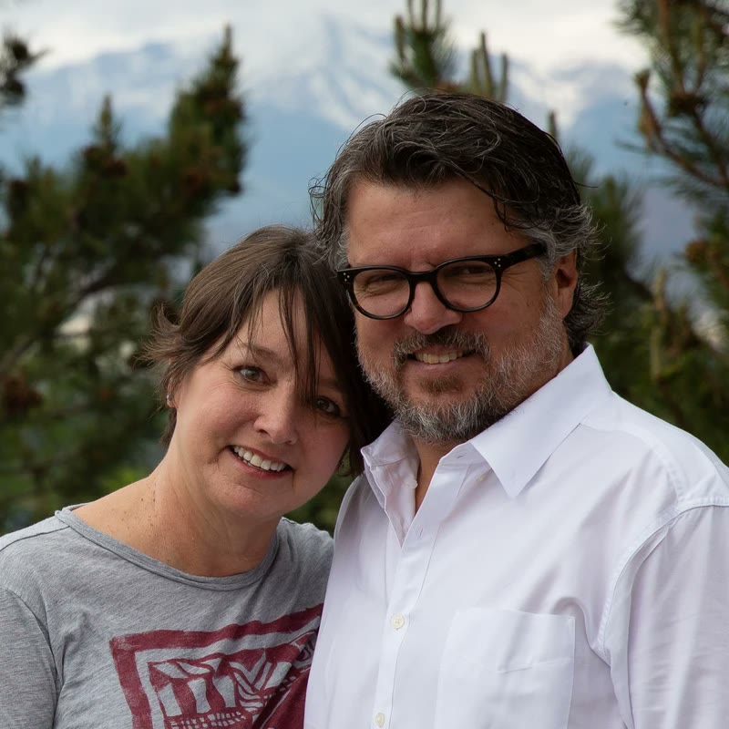
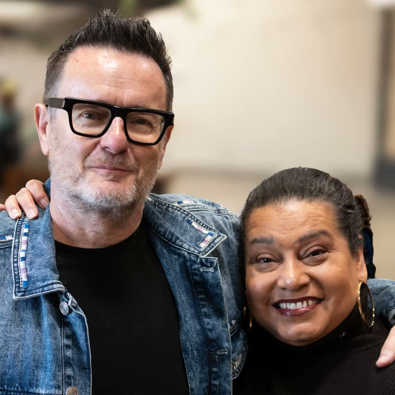
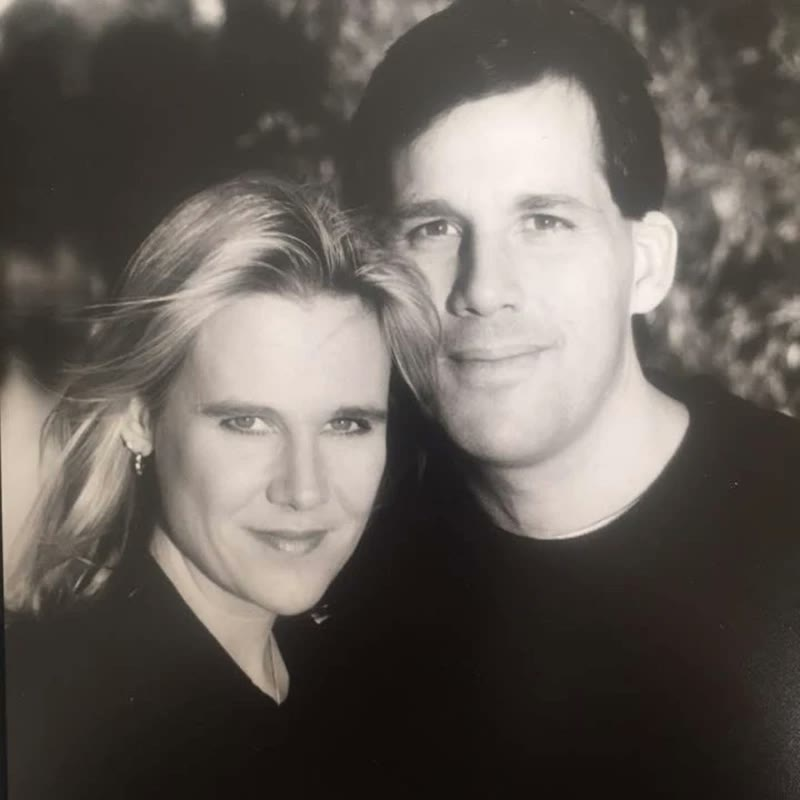
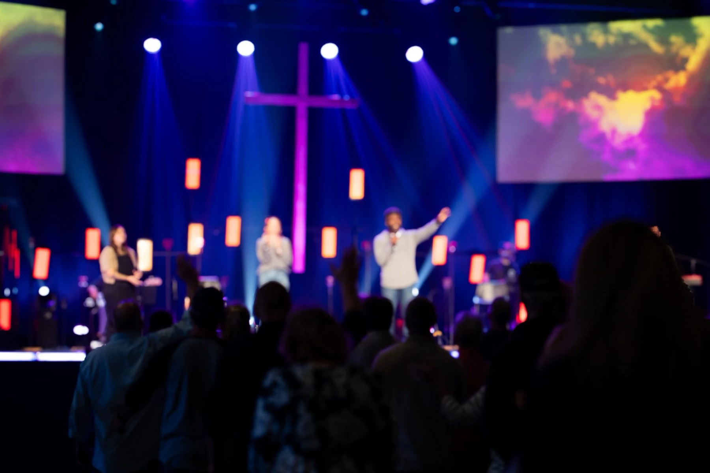
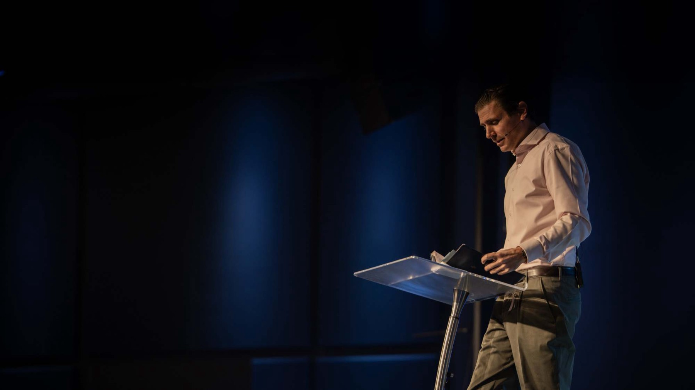
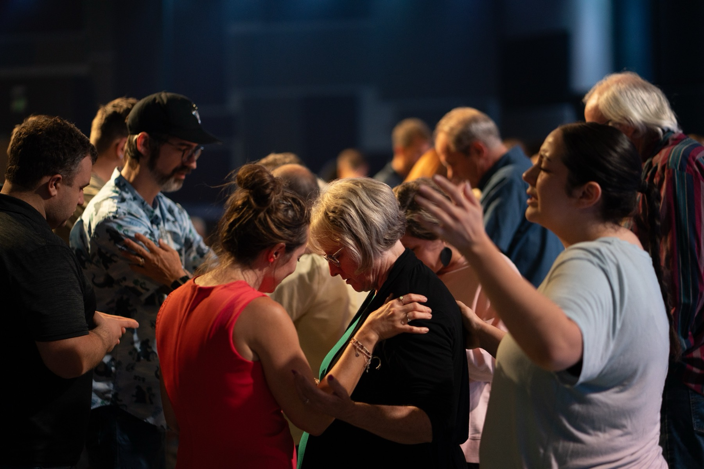
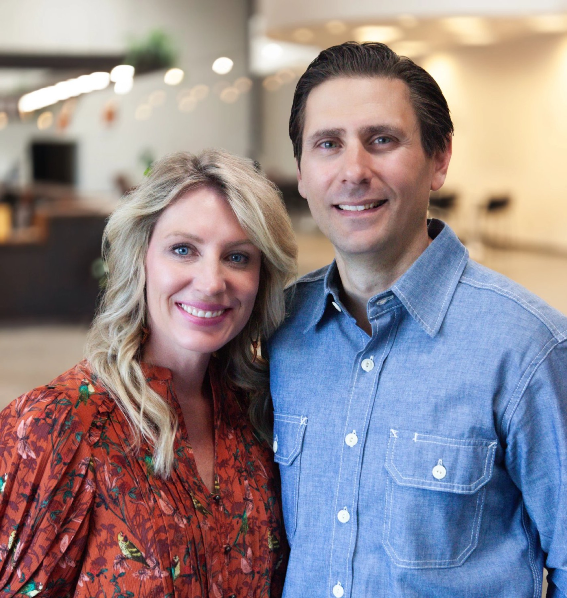

Twelve people and a prayer meeting.
Springs Church began in 2009 as a small basement prayer meeting of twelve folks. It was started by three couples, each with their own unique gifting.



Springs Church exists to ignite a passion for Christ and to equip believers for His mission in Colorado Springs and the world.
Since 2009, we’ve been a church family grounded in Spirit-filled worship, Biblical preaching and powerful prayer.



At Springs Church we desire to be an authentic community of worshippers who are passionate about understanding Scripture, practicing prayer, experiencing community, and developing calling.
Biblical preaching every Sunday, and a Bible in your pocket the rest of the week.
We pray together every Wednesday at 6:30PM, and our prayer team would love to pray with you any week.
Groups meet in homes, at the church and around town, so no one has to walk with Jesus alone.
Everyone has gifts and a place to use them, here in Colorado Springs and around the world.
From a basement prayer meeting to a church family from every corner of Colorado Springs.
Springs Church began in 2009 as a small basement prayer meeting of twelve folks. It was started by three couples, each with their own unique gifting.



In 2012 we moved to our current location. The new space let us expand our Springs Kids ministry, open opportunities to partner with local outreach and be a part of the vibrant Briargate neighborhood.
Springs Church is a diverse representation of spiritual heritage from every corner of our city, more than a thousand people strong. We support missionaries stateside and abroad, worship together online, and continue the mission to share the Gospel of Jesus Christ everywhere under our Lead Pastor, Michael Petillo.


Do you need to talk with someone? Life can be challenging and we have a team who would love to hear your heart, pray with you, and get you plugged into this vibrant community.
Let’s Connect Over Coffee before service on Sunday morning. If you’ve been here for ten days, ten months or even ten years, we invite everyone at Springs Church to join us for a cup of brew!
The form opens right here. Someone from our team will reach out to set a time.Join us in person or online. Friendly faces at the doors will help you find your way, and there’s a space for your kids to meet Jesus too.